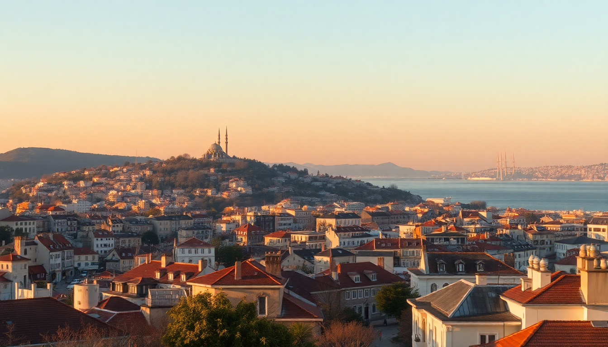

Best Cities to Visit in Turkey: Istanbul, Ankara, Izmir

I spent three weeks bouncing between Turkey’s three biggest cities, and each one felt like a different country. Istanbul is the chaotic heart, Ankara is the quiet bureaucrat, and Izmir is the laid-back cousin by the sea. If you’re planning a trip that covers all three, here’s what I learned about getting around, where to eat, and what to skip.
Why visit Istanbul first?
Istanbul is the obvious starting point, and for good reason. You land at Istanbul Airport (IST) — huge, efficient, but a 40-minute taxi from Sultanahmet — and you’re immediately in a city that feels like two continents. I stayed in Karaköy, which is less touristy than Sultanahmet but still walkable to the main sights. The tram from Karaköy station to Sultanahmet takes 10 minutes and costs 15 TL.
- Hagia Sophia and Blue Mosque are side-by-side. Go to Hagia Sophia early (8:30 AM) to skip the queue.
- Basilica Cistern is worth 30 minutes. The underground lighting is dramatic, but it’s not a half-day thing.
- Galata Tower has a long line. Skip it and walk up Istiklal Street instead for the same views from a rooftop cafe.
- Eminönü ferry terminal is where you catch the Bosphorus cruise. I took the Şehir Hatları public ferry to Üsküdar — 20 TL, 20 minutes, and better than any overpriced tourist boat.
For food, I ate at Çiya Sofrası in Kadıköy (Asian side) — the lamb tandoori is legit. Avoid restaurants directly on Sultanahmet Square; they’re overpriced and the food is reheated.
Is Ankara worth the trip from Istanbul?
Most travelers skip Ankara, but I’d argue it’s worth two days if you want to understand modern Turkey. The high-speed train from Istanbul’s Pendik station to Ankara YHT station takes 4.5 hours and costs around 150 TL. It’s clean, punctual, and a better deal than flying when you factor in airport transfers.
Ankara is spread out, so base yourself in Kızılay or Kavaklıdere for walkable access to cafes and museums.
- Anıtkabir (Atatürk’s mausoleum) is the main draw. It’s free, massive, and the museum underneath is surprisingly well-curated. Plan 2 hours.
- Museum of Anatolian Civilizations is a hidden gem — Hittite artifacts that rival anything in Istanbul’s archaeology museum.
- Hamamönü neighborhood has restored Ottoman houses and small artisan shops. It’s touristy but pleasant for a slow afternoon.
- For food, Zenger Paşa Konağı serves traditional Ottoman dishes in a 150-year-old mansion. The testi kebab (pottery kebab) is the move.
Ankara isn’t pretty in the way Istanbul is. It’s gray and functional. But the people are friendlier, prices are lower, and the traffic is manageable.
What’s the best way to see Izmir’s coast?
Izmir is Turkey’s third city, but it feels more like a big town with a waterfront promenade. I flew from Ankara to Izmir (1 hour, 400 TL with Pegasus) because the train takes 12 hours. The Adnan Menderes Airport is 20 minutes from the city center via the İZBAN metro line.
Stay in Alsancak — it’s the liveliest neighborhood, full of bars, seafood restaurants, and 19th-century apartment buildings. I booked a room at Key Hotel on 1457 Sokak, which was quiet and had a rooftop terrace.
- Kordon is the seaside walkway. Rent a bike or just walk from Gündoğdu Square to Konak Pier at sunset.
- Kemeraltı Bazaar is older and less polished than Istanbul’s Grand Bazaar. I preferred it — fewer touts, more locals buying olives and cheese.
- Agora Open Air Museum is a 15-minute walk from Kemeraltı. It’s a Roman ruin with intact mosaics, and it’s never crowded.
- Day trip to Şirince village (1 hour by minibus from Izmir’s Basmane station) for wine tasting and hillside views. The village is touristy but the fruit wines are legit.
For food, Deniz Restaurant on Kordon serves grilled sea bass with a view. Aysel Café in Alsancak does a mean boyoz (a local pastry) for breakfast.
When is the best time to visit each city?
Timing matters because Turkey’s three cities have very different climates.
- Istanbul is best in April–May and September–October. Summer (June–August) is crowded and humid. Winter is cold and rainy, but the city empties out and hotel prices drop.
- Ankara has a continental climate. May–June and September are ideal. July and August are hot (35°C), and December–February is cold and snowy. I visited in March and it was chilly but tolerable.
- Izmir is Mediterranean. May, June, and September are perfect — warm enough for the beach, cool enough for walking. July and August are scorching (40°C), and the city empties as locals flee to holiday towns.
If you’re doing all three in one trip, aim for late May or early September. You’ll get good weather everywhere without peak-season crowds.
How do you get between these three cities?
The high-speed train network covers Istanbul–Ankara–Eskişehir–Konya, but Izmir is only connected by conventional trains (slow) or flights.
- Istanbul to Ankara: High-speed train from Pendik or Söğütlüçeşme stations. Book on TCDD Taşımacılık website. Avoid the bus — it’s 6 hours vs. 4.5 by train.
- Ankara to Izmir: Fly. Pegasus and Turkish Airlines have multiple daily flights. The bus takes 8 hours; the train takes 12.
- Izmir to Istanbul: Fly or take the overnight bus. I flew back to Istanbul for 35 USD with Pegasus. The bus is cheaper (200 TL) but you lose a day.
- Local transport: In Istanbul, get an Istanbulkart (refillable transit card). In Ankara, use Ankarakart. In Izmir, İzmirim Kart works for metro, tram, and ferries.
What should you skip in these cities?
I’ll be honest about what I regretted.
- Istanbul’s Grand Bazaar is a maze of aggressive salesmen. Go for the architecture, not the shopping. Buy spices at Mısır Çarşısı (Spice Bazaar) instead.
- Ankara’s castle (Ankara Kalesi) is a steep climb with limited views. The neighborhood below (Hisar) is more interesting than the castle itself.
- Izmir’s Clock Tower is just a photo stop. Don’t plan more than 5 minutes there.
- Whirling dervish shows in Sultanahmet are tourist traps. If you’re interested, attend a real sema ceremony at Galata Mevlevihanesi in Istanbul for 100 TL.
FAQ
Is it safe to travel between Istanbul, Ankara, and Izmir as a solo traveler? Yes. I traveled solo as a woman and never felt unsafe. The high-speed trains are monitored, the buses are reliable (use Kamil Koç or Metro Turizm), and the airports are standard. Keep your wallet in your front pocket on crowded trams in Istanbul, same as any big city.
Do I need a visa for Turkey? Most nationalities (US, UK, EU, Australia) need an e-Visa from the official Republic of Turkey e-Visa website. It costs around 50 USD, takes 5 minutes to apply, and you need a passport valid for at least 6 months from your arrival date. Print it or save the PDF on your phone.
Which city has the best food scene? Istanbul wins for variety — you can eat Georgian, Kurdish, Armenian, and Ottoman dishes all in one day. But Izmir has the best seafood and the freshest produce. The çöp şiş (minced meat skewers) in Izmir’s Kemeraltı are better than anything I ate in Istanbul’s tourist districts.
Conclusion
- Start in Istanbul for 4–5 days, then take the high-speed train to Ankara for 2 days.
- Fly from Ankara to Izmir for 3 days, then fly back to Istanbul for your departure.
- Book trains and flights in advance on TCDD Taşımacılık and Pegasus websites — prices double last-minute.
- Skip the Grand Bazaar, Ankara Castle, and whirling dervish shows aimed at tourists.
- Eat local: testi kebab in Ankara, boyoz in Izmir, and balık ekmek (fish sandwich) by the Eminönü docks in Istanbul.